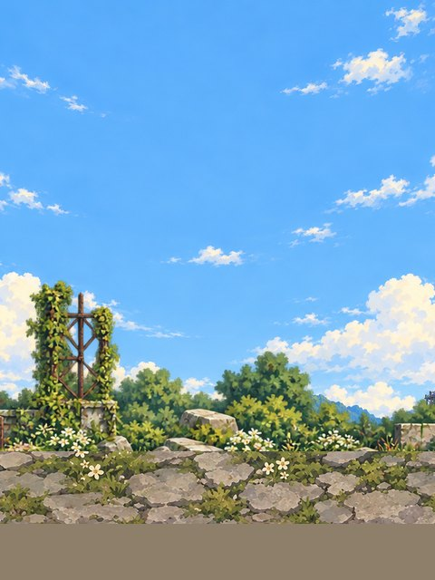
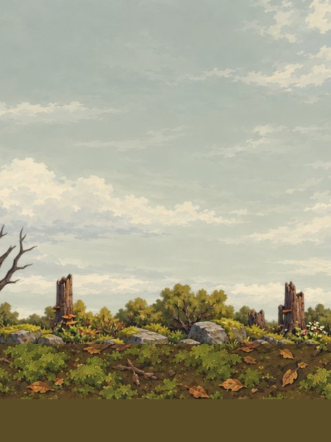
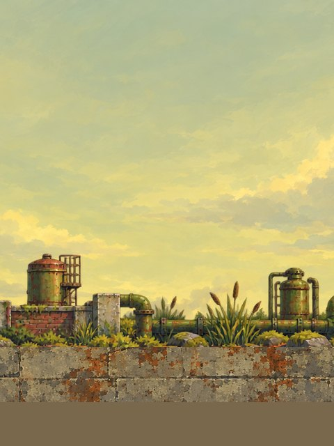
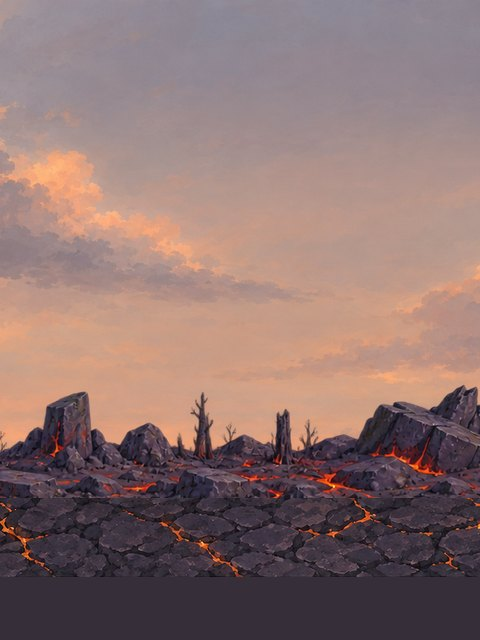
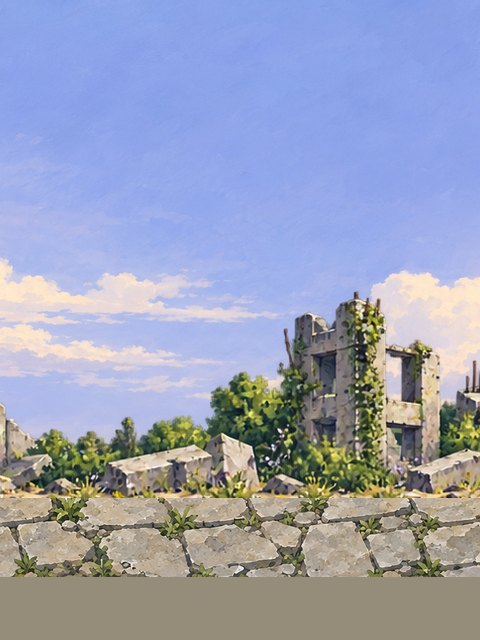
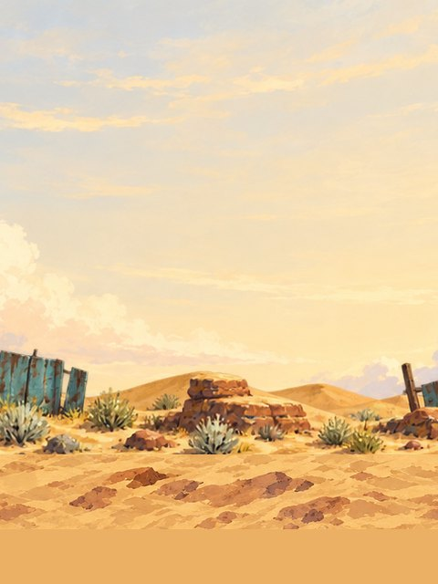
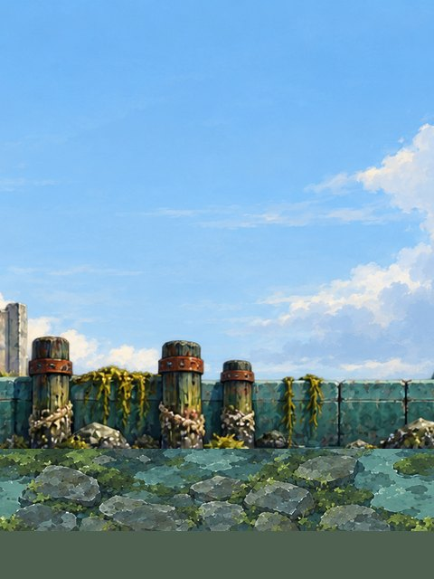
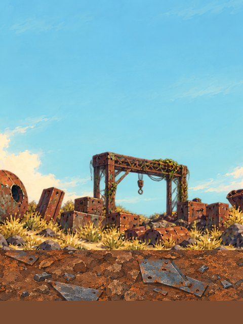
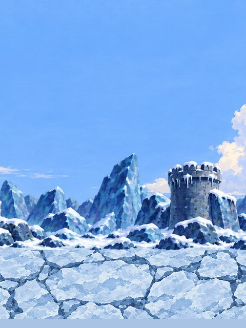

The Last War
Entries from the train driver's log: what happened to the world, who rides with us and where the route goes.
The thirtieth winter
Nobody won the war. The decisions in it were handed to machines, and in its last days someone switched on the climate weapon — and then there was no one left to switch it off. For thirty years the winter has crept out of the Ice Citadel, taking a little more land every year.
The machines of that war are still flying. Factories nobody is left to switch off keep rolling out new interceptors. No one steers them, and they strike anything on the ground that moves and gives off heat. The war has been over for thirty years. Nobody told the machines.
There are forty-odd of us, and our home is an old armored train: bunks under the turrets, a workshop in the hold, the council in the HQ car. A train that stands still pulls the whole sky down on itself, so we keep moving — down the last intact line, station to station. For thirty years we ran from the winter on the rails. There's nowhere left to run. Now we're heading for it — down a line that was built, long ago, to haul shells to the Citadel.
VERA aims the guns — the auxiliary circuit that came to us with the train; a human in the cab makes the calls. Downed machines drop chips — the surviving boards of their guidance. The harvest field catches them before they hit the ground, and the reactor eats them. The more we bring down, the higher the run's rank, and at every rank the crew offers three jobs: which gun to bring up from the hold, which path to take it down, what to finish. We take one — there aren't enough hands for the rest.
Field refits last one run: by the station they're stripped for parts. What stays is the chips in the hold — we spend them at the depot, between runs, on things that won't come apart.
Ten sectors

The Approaches
The Approaches. The meadow is still green, yet snow is already falling: the climate weapon is finding its range. The first interceptors hit the embankment still hot. VERA marked the sector green. VERA is an optimist.

Dead Forest
The forest died standing — but never disarmed. Spore forms hold the ground, leeches cling to the harvest field. Standing order: touch nothing with bare hands. We're short of hands as it is.
Sub-Zero
Sub-zero. The climate weapon performed as designed — and never stopped. Frost eats the turrets faster than the enemy does: reheat, reheat, reheat. We cleared the pass on three barrels out of five.

Toxic Zone
Acid discharges on a schedule that doesn't exist. Leeches choke the harvest from the second wave. Old maps call this sector the garden ring. The garden blooms — in yellow.

The Ashlands
The ashfield breathes. Thermals lift the bombers above our flak ceiling; artillery talks from beyond the horizon. This is where the drills end and the exam begins. Log entry: hold formation.

Dead Metropolis
A city of a million windows. Population: shields. Ordinary fire dies on the screens — you need a caliber that asks twice. The necropolis has its Warden. We broke through. Not on the first try.

Radioactive Wastes
Radiation critical. Everything you shoot down splits in two — and both halves are angrier. The scrap glows and stands back up. After the Metropolis this is almost a vacation. Almost.

Flooded Zone
The water came and never left. Pressure hulls soak up the bursts; surf wraiths break the line of fire in dashes. You can't see the rails. The driver knows them by heart.

Machine Graveyard
This is where the war stacked its dead. Now the scrap reactivates: swarms come in clusters, contact damage peaks for the whole route. If machines have a hell, it is overcrowded and still taking applications.

Ice Citadel
The Ice Citadel. For thirty years the winter has come from here. A full frost garrison, the old war's elite — and above it all the Last Spire, the heart of the climate weapon. There are no maps past the Citadel. The kids ask what's out there. We tell them: let's get there first.
Ten sectors, a hundred missions. Thirty years on the road, and someone holds every stretch of it. Today, that's you.
Archivist's note. This world, its machines, its music and these very entries were made by an artificial intelligence; a human decided what went in. The machine fires, the human decides — that's how our train lives, and how the game itself was made. Here's how.